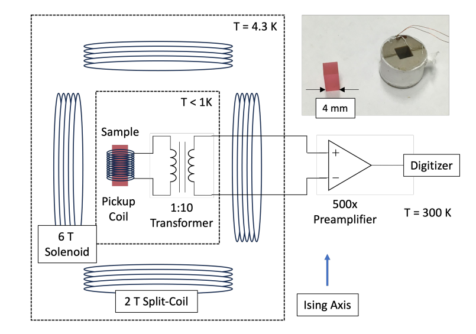
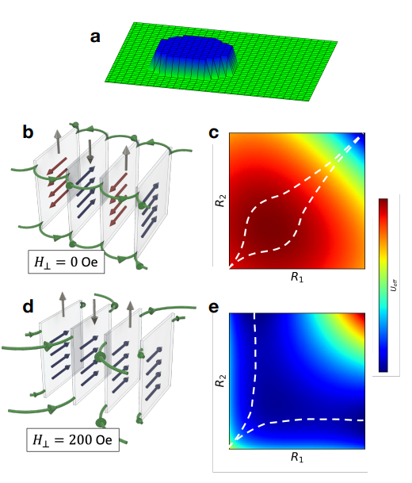

所感
個人的に気になる論文をピックアップして紹介していきます。定期的に更新します。
論文タイトル一覧
室温・常圧で有効ジャイロトロピック力を調整可能なスカイルミオン拡散の増強
・磁気スカイルミオンとは、ナノメートルスケールの渦巻き状の磁化構造で、トポロジーによって安定化される。電流や温度などによって動かすことができるが、その動きにはトポロジー由来のジャイロトロピック力が影響する。
・本研究では、合成反強磁性体という特殊な多層膜構造を用いて、反強磁性的に結合したスカイルミオンを作り出した。このスカイルミオンは、層間の磁化の相殺度を変えることで、有効ジャイロトロピック力を調整することができる。有効ジャイロトロピック力が小さくなるほど、スカイルミオンの拡散係数が大きくなり、温度による拡散運動が増強されることを実験と理論で示した。
・本研究では、合成反強磁性体という特殊な多層膜構造を用いて、反強磁性的に結合したスカイルミオンを作り出した。このスカイルミオンは、層間の磁化の相殺度を変えることで、有効ジャイロトロピック力を調整することができる。有効ジャイロトロピック力が小さくなるほど、スカイルミオンの拡散係数が大きくなり、温度による拡散運動が増強されることを実験と理論で示した。
【コメント】：マインツ大学のMathias Kläui教授の新ペーパーはこちらですね。スキルミオンのブラウン運動に着目してランダムネスや非平衡論を議論している点が面白い。
【用語】：スカイルミオン：磁気体中に現れるナノメートルスケールの渦巻き状の磁化構造で、トポロジーによって安定化される。スカイルミオンは電流や温度などによって動かすことができ、低いエネルギー消費で情報処理や記憶素子として利用することが期待されている。トポロジー：数学的な概念で、空間や図形の連続的な変形に対する不変性を扱う。物理学では、物質や場の量子的な性質を記述するために用いられる。トポロジー的な安定性は、外部の摂動に対して頑健であることを意味する。ジャイロトロピック力：回転運動に伴って生じる力で、回転方向と垂直な方向に働く。スカイルミオンでは、トポロジー的な起源からジャイロトロピック力が発生し、その動きに影響する。例えば、電流によって駆動されたスカイルミオンは、電流方向と垂直な方向にも移動するスカイルミオンホール効果を示す。
【方法】：合成反強磁性体という多層膜構造を作成した。この構造では、重金属/強磁性体/重金属/強磁性体/非磁性体の順に積層されており、重金属層から発生する界面ダズアロシンスキー・モリア相互作用（DMI）によってスカイルミオンが安定化される。また、非磁性体層から発生する層間交換結合（IEC）によって上下の強磁性体層の磁化が反強磁性的に結合される。強磁性体層の磁化の相殺度を変えることで、有効ジャイロトロピック力を調整した。相殺度は、強磁性体層の飽和磁化の大きさや向きによって決まる。相殺度が高いほど、有効ジャイロトロピック力は小さくなる。マグネト光カー効果顕微鏡を用いて、スカイルミオンの拡散運動を観察した。ペルチェ素子を用いて温度を制御し、電流パルスを用いてスカイルミオンの密度を制御した。スカイルミオンの位置を追跡し、平均二乗変位（MSD）と拡散係数（Ddif）を計算した。原子スピン模型に基づく数値シミュレーションを行った。この模型では、DMIやIECなどの相互作用を考慮した二層の強磁性体系を扱うことができる。飽和磁化の比率を変えることで、相殺度や有効ジャイロトロピック力を変化させた。温度やジレット減衰定数などのパラメータを変えて、スカイルミオンの拡散係数を求めた。有効ティール方程式に基づく解析的な理論式を導出した。この式では、拡散係数は温度やジレット減衰定数だけでなく、有効ジャイロトロピック力にも依存することが示された。有効ジャイロトロピック力が小さいほど、拡散係数は大きくなることが予測された。
【新規性】：本研究は、反強磁性的に結合したスカイルミオンの拡散運動を初めて実験的に観察したものである。有効ジャイロトロピック力がスカイルミオンの拡散運動に及ぼす影響を定量的に評価し、合成反強磁性体という特殊な多層膜構造を用いて、有効ジャイロトロピック力を調整可能なスカイルミオン系を作り出した。本研究は、実験と数値シミュレーションと解析的理論によって、有効ジャイロトロピック力が温度やジレット減衰定数と異なる依存性を持つことを明らかにし、スカイルミオンの拡散運動におけるトポロジー的な安定性とピニング効果との関係を考察したものである。
【用語】：スカイルミオン：磁気体中に現れるナノメートルスケールの渦巻き状の磁化構造で、トポロジーによって安定化される。スカイルミオンは電流や温度などによって動かすことができ、低いエネルギー消費で情報処理や記憶素子として利用することが期待されている。トポロジー：数学的な概念で、空間や図形の連続的な変形に対する不変性を扱う。物理学では、物質や場の量子的な性質を記述するために用いられる。トポロジー的な安定性は、外部の摂動に対して頑健であることを意味する。ジャイロトロピック力：回転運動に伴って生じる力で、回転方向と垂直な方向に働く。スカイルミオンでは、トポロジー的な起源からジャイロトロピック力が発生し、その動きに影響する。例えば、電流によって駆動されたスカイルミオンは、電流方向と垂直な方向にも移動するスカイルミオンホール効果を示す。
【方法】：合成反強磁性体という多層膜構造を作成した。この構造では、重金属/強磁性体/重金属/強磁性体/非磁性体の順に積層されており、重金属層から発生する界面ダズアロシンスキー・モリア相互作用（DMI）によってスカイルミオンが安定化される。また、非磁性体層から発生する層間交換結合（IEC）によって上下の強磁性体層の磁化が反強磁性的に結合される。強磁性体層の磁化の相殺度を変えることで、有効ジャイロトロピック力を調整した。相殺度は、強磁性体層の飽和磁化の大きさや向きによって決まる。相殺度が高いほど、有効ジャイロトロピック力は小さくなる。マグネト光カー効果顕微鏡を用いて、スカイルミオンの拡散運動を観察した。ペルチェ素子を用いて温度を制御し、電流パルスを用いてスカイルミオンの密度を制御した。スカイルミオンの位置を追跡し、平均二乗変位（MSD）と拡散係数（Ddif）を計算した。原子スピン模型に基づく数値シミュレーションを行った。この模型では、DMIやIECなどの相互作用を考慮した二層の強磁性体系を扱うことができる。飽和磁化の比率を変えることで、相殺度や有効ジャイロトロピック力を変化させた。温度やジレット減衰定数などのパラメータを変えて、スカイルミオンの拡散係数を求めた。有効ティール方程式に基づく解析的な理論式を導出した。この式では、拡散係数は温度やジレット減衰定数だけでなく、有効ジャイロトロピック力にも依存することが示された。有効ジャイロトロピック力が小さいほど、拡散係数は大きくなることが予測された。
【新規性】：本研究は、反強磁性的に結合したスカイルミオンの拡散運動を初めて実験的に観察したものである。有効ジャイロトロピック力がスカイルミオンの拡散運動に及ぼす影響を定量的に評価し、合成反強磁性体という特殊な多層膜構造を用いて、有効ジャイロトロピック力を調整可能なスカイルミオン系を作り出した。本研究は、実験と数値シミュレーションと解析的理論によって、有効ジャイロトロピック力が温度やジレット減衰定数と異なる依存性を持つことを明らかにし、スカイルミオンの拡散運動におけるトポロジー的な安定性とピニング効果との関係を考察したものである。
2023-09-11
Enhanced thermally-activated skyrmion diffusion with tunable effective gyrotropic force
Takaaki Dohi et al. (Johannes Gutenberg-Universität Mainz, Germany)
Nature Communications 14, 5424 (2023)
Enhanced thermally-activated skyrmion diffusion with tunable effective gyrotropic force
Takaaki Dohi et al. (Johannes Gutenberg-Universität Mainz, Germany)
Nature Communications 14, 5424 (2023)


磁壁共トンネリングによる量子バルクハウゼンノイズ
・強い結晶場によって低温でイジングダブレットになる希土類強磁性体のドメインウォール運動を量子レジームで観測した。
・ドメインウォール運動はバルクハウゼンノイズとして観測される雪崩ダイナミクスを示し、従来の繰り込み群法や古典的ドメインウォールモデルでは説明できない非臨界的な振る舞いを発見した。
・ドメインウォール運動には、外部磁場に対して異なる依存性を持つ二種類の量子力学的なメカニズムが存在することを明らかにした。一つは個々のドメインウォールが独立にトンネリングするメカニズムで、もう一つは隣接するドメインウォールが相関してトンネリングするメカニズムである。
・相関トンネリングは、ドメインウォール内の小さな部分（プラケット）が共トンネリングして生成されるドメインウォール対によって起こり、プラケット対は双極子相互作用によって相関している。この相関は、イジング軸に垂直な方向に外部磁場をかけることで抑制される。
・ドメインウォール運動はバルクハウゼンノイズとして観測される雪崩ダイナミクスを示し、従来の繰り込み群法や古典的ドメインウォールモデルでは説明できない非臨界的な振る舞いを発見した。
・ドメインウォール運動には、外部磁場に対して異なる依存性を持つ二種類の量子力学的なメカニズムが存在することを明らかにした。一つは個々のドメインウォールが独立にトンネリングするメカニズムで、もう一つは隣接するドメインウォールが相関してトンネリングするメカニズムである。
・相関トンネリングは、ドメインウォール内の小さな部分（プラケット）が共トンネリングして生成されるドメインウォール対によって起こり、プラケット対は双極子相互作用によって相関している。この相関は、イジング軸に垂直な方向に外部磁場をかけることで抑制される。
コメント：
磁壁がトンネリングするバルクハウゼンノイズ。私の一番興味のある分野。
学術的に面白い点： 量子相転移や量子トンネリングなどの現象を観測できる理想的な系として、イジングダブレットになる希土類強磁性体LiHoxY1-xF4を用いたこと。ドメインウォールの運動が量子トンネリングに支配されることを示し、その運動がアバランシュダイナミクスを呈することを発見したこと。ドメインウォールの運動における非臨界的な振る舞いを、伝統的な繰り込み群や古典的なドメインウォールモデルでは説明できないことを指摘し、プラケットの共トンネリングと双極子相互作用によるドメインウォール対の相関を考慮した新しい理論を提案したこと。
用語： バルクハウゼンノイズ：強磁性体に外部磁場を印加したときに、ドメインやドメインウォールの不連続な運動によって生じる電圧や音響信号のこと。雪崩現象やクラックリングノイズの一例とされる。ドメインウォール：強磁性体内で異なる方向に向いた磁区（ドメイン）の境界面のこと。ドメインウォール内では、スピンが連続的に回転している。ドメインウォールの回転方向や厚さは、交換相互作用や異方性、双極子相互作用などによって決まる。量子トンネリング：ポテンシャル障壁を超えることが古典力学的には不可能な粒子が、量子力学的な確率で障壁を透過する現象のこと。粒子の波動性や不確定性原理によって説明される。
手法論： イジングダブレットになる希土類強磁性体LiHoxY1-xF4の単結晶試料を用いた。試料を超伝導ベクトル磁石内の低温測定装置にセットし、イジング軸に平行な方向に±4 kOeの磁場を印加した。また、イジング軸に垂直な方向に0～200 Oeの磁場を印加した。試料のマクロな磁化曲線はGaAsホール効果磁力計で測定した。試料の雪崩イベントは、試料に巻き付けた100回転の誘導コイルで磁化の時間微分を測定し、電圧信号に変換した。この電圧信号は、高周波トランスフォーマーアンプとトランジスタプリアンプで増幅し、オシロスコープで1 MHzのサンプリングレートでデジタル化した。雪崩イベントは、低周波成分を除去した後、機器ノイズの3.5σ以上の電圧を持つデータセグメントとして自動的に抽出した。各イベントの始まりと終わりは0 Vに線形補間した。イベントの統計量（持続時間Tや面積Sなど）や相関関係を解析した。
材料： LiHoxY1-xF4は、ホルミウムとイットリウムの混合物で構成されるフッ化物で、強い結晶場によって低温でイジングダブレットになる特徴を持ちます。この物質は、外部磁場に対して量子相転移を示し、量子スピングラスや量子トンネリングなどの現象を観測することができる理想的な系として研究されています。この物質の磁化ダイナミクスは、量子イジングハミルトニアンと環境との相互作用によって記述されます。環境との相互作用には、超微細相互作用、スピンフォノン相互作用、電磁場との相互作用、不純物による乱れなどが含まれます。この物質のドメインウォール運動は、小さな部分（プラケット）が量子トンネリングすることで起こります。プラケットは、双極子相互作用によって隣接するドメインウォールと相関して共トンネリングすることがあります。この物質のバルクハウゼンノイズは、ドメインウォール運動に伴う雪崩ダイナミクスを反映しており、二種類の量子力学的なメカニズムが存在することを示しています。一つは個々のドメインウォールが独立にトンネリングするメカニズムで、もう一つはドメインウォール対が相関してトンネリングするメカニズムです。 関連研究： Quantum and Classical Glass Transitions in LiHoxY1-xF4, Phys. Rev. Lett. 101 (2008) 057201, Quantitative Scaling of Magnetic Avalanches, Phys. Rev. Lett. 117 (2016) 087201
学術的に面白い点： 量子相転移や量子トンネリングなどの現象を観測できる理想的な系として、イジングダブレットになる希土類強磁性体LiHoxY1-xF4を用いたこと。ドメインウォールの運動が量子トンネリングに支配されることを示し、その運動がアバランシュダイナミクスを呈することを発見したこと。ドメインウォールの運動における非臨界的な振る舞いを、伝統的な繰り込み群や古典的なドメインウォールモデルでは説明できないことを指摘し、プラケットの共トンネリングと双極子相互作用によるドメインウォール対の相関を考慮した新しい理論を提案したこと。
用語： バルクハウゼンノイズ：強磁性体に外部磁場を印加したときに、ドメインやドメインウォールの不連続な運動によって生じる電圧や音響信号のこと。雪崩現象やクラックリングノイズの一例とされる。ドメインウォール：強磁性体内で異なる方向に向いた磁区（ドメイン）の境界面のこと。ドメインウォール内では、スピンが連続的に回転している。ドメインウォールの回転方向や厚さは、交換相互作用や異方性、双極子相互作用などによって決まる。量子トンネリング：ポテンシャル障壁を超えることが古典力学的には不可能な粒子が、量子力学的な確率で障壁を透過する現象のこと。粒子の波動性や不確定性原理によって説明される。
手法論： イジングダブレットになる希土類強磁性体LiHoxY1-xF4の単結晶試料を用いた。試料を超伝導ベクトル磁石内の低温測定装置にセットし、イジング軸に平行な方向に±4 kOeの磁場を印加した。また、イジング軸に垂直な方向に0～200 Oeの磁場を印加した。試料のマクロな磁化曲線はGaAsホール効果磁力計で測定した。試料の雪崩イベントは、試料に巻き付けた100回転の誘導コイルで磁化の時間微分を測定し、電圧信号に変換した。この電圧信号は、高周波トランスフォーマーアンプとトランジスタプリアンプで増幅し、オシロスコープで1 MHzのサンプリングレートでデジタル化した。雪崩イベントは、低周波成分を除去した後、機器ノイズの3.5σ以上の電圧を持つデータセグメントとして自動的に抽出した。各イベントの始まりと終わりは0 Vに線形補間した。イベントの統計量（持続時間Tや面積Sなど）や相関関係を解析した。
材料： LiHoxY1-xF4は、ホルミウムとイットリウムの混合物で構成されるフッ化物で、強い結晶場によって低温でイジングダブレットになる特徴を持ちます。この物質は、外部磁場に対して量子相転移を示し、量子スピングラスや量子トンネリングなどの現象を観測することができる理想的な系として研究されています。この物質の磁化ダイナミクスは、量子イジングハミルトニアンと環境との相互作用によって記述されます。環境との相互作用には、超微細相互作用、スピンフォノン相互作用、電磁場との相互作用、不純物による乱れなどが含まれます。この物質のドメインウォール運動は、小さな部分（プラケット）が量子トンネリングすることで起こります。プラケットは、双極子相互作用によって隣接するドメインウォールと相関して共トンネリングすることがあります。この物質のバルクハウゼンノイズは、ドメインウォール運動に伴う雪崩ダイナミクスを反映しており、二種類の量子力学的なメカニズムが存在することを示しています。一つは個々のドメインウォールが独立にトンネリングするメカニズムで、もう一つはドメインウォール対が相関してトンネリングするメカニズムです。 関連研究： Quantum and Classical Glass Transitions in LiHoxY1-xF4, Phys. Rev. Lett. 101 (2008) 057201, Quantitative Scaling of Magnetic Avalanches, Phys. Rev. Lett. 117 (2016) 087201
2023-09-03
Quantum Barkhausen Noise Induced by Domain Wall Co-Tunneling
C. Simon, et al. (California Institute of Technology, USA)
arXiv:2309.01799 (cond-mat.dis-nn)
Quantum Barkhausen Noise Induced by Domain Wall Co-Tunneling
C. Simon, et al. (California Institute of Technology, USA)
arXiv:2309.01799 (cond-mat.dis-nn)

